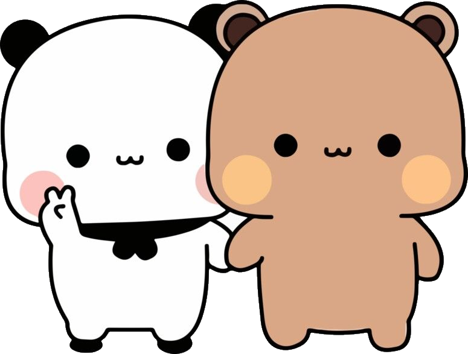

Nasza Historia.
Sprawdz też:
Początek naszej wspólnej Historii
Jak sie to wszystko zaczeło, jak to wyglądało z perspektywy tej drugiej strony, która nieświadomie zrobiła krok ku miłości
Nagły zwrot całej Akcji
Moment przełomowy który zaczął cała tą podróż - nadała rozpędu i przyczyniła sie do oficjalnego początku
Co z nami dalej ?
Co dalej nas czeka? co bedzie za jakiś czas i przede wszystkim gdzie bedziemy my.
Krótka Historia o Nas
Oraz naszej wspólnej Miłości.
Gdyby ktoś Mi powiedział że tak bedzie wyglądać moja przyszłość - nie uwierzyłbym mu, Nigdy nie zakładałem że bede miał kogoś tak Cudownego jak Ty, Nigdy nie sądziłem że ta dziewczyna przypadkowo poznana stanie sie dla mnie najważniejszą osobą w moim życiu, Naprawde jestem wdzieczny ze właśnie tak sie to potoczyło i leci ciągle na przód, Naprawde jestem wdzieczny że moge cie mieć u swego boku niezależnie od pory dnia humoru czy innych życiowych przeszkód
A jednak - po mimo tak absurdalnie nie wiarygodnych liczb udało sie, jesteśmy razem, po mimo tylu niewiadomych po mimo tylu warstw życiowych ciernistych blokad - udało sie nam, Kocham Cie Nikola

Nasze Początki:
♥ Jak to sie zaczelo ?
To był Chłodny późny wieczór
Bardzo dobrze Pamietam tamtą noc - Pisząc ten tekst przed moimi oczami ponownie pojawiaja sie tamte chwile, moment gdy wychodziłem już z pracy, w drodze powrotnej przeglądałem wtedy Discorda, Przypadkiem przeglądając liste natknąłem sie wtedy na konto które założyłaś w chwili gdy straciłaś do wczesniejszego dostep
Na tym nowym końcie była jedna dosyć istotna rzecz, mianowicie miało ono odnośnik do twojego instagrama, Pamietam że wtedy bałem sie wtedy do Ciebie napisać, bałem sie że już mnie nie lubisz i nie chcesz ze mna rozmawiać w jakikolwiek sposób, z resztą żadne z nas wtedy też nie było jakkolwiek świadome czy to naprawde jesteś Ty. Oraz tak, pomysł z moim multikontem był całkowicie cienki - Napraawde szybko wyczytałaś z wiadomości kto do Ciebie pisze, moge tylko sie domyślać co wtedy czułas, jakie emocje przez twoja głowe przechodziły Skoro tak prosta interakcja wzruszyła wtedy Ciebie. Pisząc z toba czułem jak wszystkie emocje do mnie wracają, rozmowa była naprawde klejącą i naprawde dobrze sie z tobą czułem, zero granic , pełen luz
Po mimo tak długiej przerwy od siebie nie było czuć żadnej zrazy, żadnego ukrytego urazu. W zasadzie wręcz przeciwnie - Obdarowałaś mnie niesamowicie dużym zaufaniem, szczodrością i wręcz Siostrzęcą Miłością, Miałem wtedy przeświadczenie że wiele rzeczy które mi opowiadasz nie powinny być tak łątwo dostepne dla obcego chłopaka, Mimo tego zawsze dzieliłaś sie ze mna swoim przeżyciami, problemami oraz marzeniami. Czułem, że jesteśmy dla siebie kimś wiecej niż Brat czy Siostra, Czułem że przed nami nie ma żadnej prywatności czy też obaw, Kiełkowało to do chwili w której zaczeliśmy ze sobą już Flirtować i ktoregoś wieczoru napisałaś do mnie - że czujesz dokładnie to samo
♥ Moment przełomowy
Chwila w Której obaj zostaliśmy zaakceptowani
Nie raz, wracając z pracy, zastanawiałem się nad naszą relacją — czy to na pewno jest to, czego oboje pragniemy? Przecież dzieli nas tak wiele kilometrów… Każde z nas ma swoje obowiązki, swój świat, w którym żyje i obraca się na co dzień. Wiele razy podczas rozmów dotykaliśmy tego tematu — czy naprawdę tego chcesz? A Ty zawsze z delikatnym uśmiechem odpowiadałaś, jak bardzo jesteś szczęśliwa ze mną. Mimo całego absurdu tego dystansu, mimo że dzieliło nas tyle przestrzeni — czułem, że właśnie przy Tobie jest moje miejsce. Miejsce, w którym naprawdę czuję się dobrze. Przy Tobie.
Nagle — tamtego wieczoru, gdy rozmawialiśmy ze sobą, wszystkie nasze wątpliwości po prostu zniknęły. Pamiętam, że siedziałem wtedy tuż obok Majki, która zaczęła rozmawiać z Twoją mamą o różnych, codziennych rzeczach. Z perspektywy czasu uważam to za niesamowicie romantyczne — że nasza miłość wyszła na jaw zupełnym przypadkiem. Zamarłem w chwili, gdy usłyszałem, jak Majka zapytała, czy przypadkiem nie jesteśmy razem. Wydaje mi się, że wtedy czułaś dokładnie to samo co ja. Ku mojemu zaskoczeniu, Twoja mama nas zaakceptowała — a wraz z nią całe nasze otoczenie. Od tamtej pory zaczęliśmy rozumieć się jeszcze lepiej. To były chwile, które można przeżyć tylko raz w życiu — i cieszę się, że właśnie wtedy przeżyliśmy je razem.
Nasze wspólne dni stały się jednymi z najszczęśliwszych chwil w moim życiu. Dziękuję Ci za nie — za każdą z nich. Dziękuję, że mogłem i wciąż mogę przeżywać z Tobą prawdziwą, otwartą miłość, mimo upływu czasu. Pamiętam, jak cieszyłem się jak dziecko, odkrywając, że mam obok siebie kogoś tak wyjątkowego — kogoś, kogo miałem dosłownie tuż pod nosem, a jednak dopiero z czasem zrozumiałem, jak bardzo jest mi bliski. Kogoś, kogo potrafiłem zrozumieć bez słów. Pisząc te słowa, czuję, jak łzy same napływają mi do oczu. Wszystkie obrazy, które przewijają się w mojej głowie, są o Tobie — tylko o Tobie. Pamiętam, jak mówiłaś, że wiesz, iż to właśnie jest to, czego szukałaś… że jesteś szczęśliwa, że czujesz, jak odżyłaś, że niczego więcej Ci nie potrzeba. I wiesz… cieszę się, że mimo mojej niedoskonałości, choć odrobinę wypełniłem Twoje życie ciepłem i miłością.
Moja podróż
Pierwsze setki Kilometrów
tydzien przed moim ustalonym terminem skontaktowałem sie wtedy z twoja mamą w sprawie mojej podróży, oferowała mi podwózke oraz pomoc z przygotowaniami ale odmówiłem, wszystko od samego początku po sam koniec zainicjowałem sam, Kupiłem bilety oraz wziąłem dodatkowe godziny pracy aby miec wiecej wolnego, Mówiłem wtedy tobie że musze szkolić nowego pracownika gdy tak naprawde wytwarzałem sobie czas wolny na termin mojego wyjazdu
Godzina 21 stoje juz na przystanku i czekam aż Autokar mnie zgarnie, Wtedy pisaliśmy jeszcze ze soba i powoli kładłaś sie spać, Gdy przyjechał zaczełą sie moja pierwsza 8 godzinna podróż do Warszawy przez Wrocław oraz 3 godzinna przesiadka do Mławy, Nie spałem praktycznie 2 dni bo nie znałem jeszcze trasy aby pozwolic sobie na takie drzemki, gdy juz dojechalem i byłem pod twoimi drzwiami czułem ogromny stres, Ale Pierwszy raz Gdy Cie ujrzałem w drzwiach odczułem Ulge, poczułem że jestem w domu, jestem z Toba moge cie dotknąć przytulić poczuc zapach twojej Skóry, Byłem w szoku jednoczesnie tak bardzo szczesliwy, nie chcialem aby to sie kiedyś skończyło
Czułem sie Niesamowicie ciepło przyjety przez twoja rodzine, kocham te chwile gdy moglismy razem leżeć wtuleni w siebie, Obgadywać wszystkich dookoła i żyć tylko i wyłącznie soba, razem grać w gry układać klocki oraz przeprowadzać długie romantyczne rozmowy.
Kolejny Etap:
♥ Jakie były moje odczucia?
Jak sie czułem w waszym gronie
Szczerze nie sądziłem że zostanie aż tak dobrze przyjęty - moja relacja z twoja rodzina naprawde zakwitła w tym kierunku w jakim oczekiwałem, Ciesze sie że sie poznaliśmy i jesteśmy dla siebie już tacy bliscy , razem potrafimy współpracować oraz są wstanie mi pomóc jeżeli chodzi o przygotowywanie własnie takich wyjazdów
Po części musze stąd podziękować także twoim Siorką, włożyły ogrom pracy oraz wysiłku jeżeli chodzi o wszystkie eventy takie jak właśnie podróże czy zdradzanie mi twoich preferencji, Ciesze się że po mimo tego jak bardzo potraficie sie kłócić to jeżeli chodzi o tą kwestie dają mi pełne wsparcie, jeżeli to czytasz - przytul je, bo po mimo tego wszystkiego to naprawde Ciebie kochaja
Po moim wyjezdzie kontakt wcale nie zmalał, do dziś wymieniamy sie setkami wiadomości o różnym temacie - Ciesze sie tez po czesci ze nawet i moje siostry zaczeły odgrywać jakąś role w tym uniwersum, powoli zaczyna sie czuć tą bardzo przyjemną atmosfere w całym naszym otoczeniu, i pomyśleć że to wszystko zaczeło sie w zasadzie od nas
♥ Wszystko przed Nami
Oraz dalsze wyzwania
Przed nami kolejne wyzwania - Szkoła Studia praca. Ale wierze, że razem damy sobie rade, nie ma żadnej siły która by nas obydwu powstrzymała , ponadto chce Ci powiedzieć że jestem Wdzieczny Światu , Wdzięczny bo Mam własnie Ciebie Kogoś przy Kim czuje sie jakby każdy następny dzień miał jeszcze wiekszy sens, Marze aby z tobą założyć Rodzine i żyć szczęśliwie wiem że zdarzają sie dni w których sie nie dogadujemy, obrażamy sie na siebie i sie nie odzywamy - ale w głebi serca nie ważne co by było miedzy nami zawsze bede czuć do ciebie dokładnie to samo - nie potrafie sie na Ciebie złościć nawet wtedy gdy naprawde bym chciał - Myśle że czujesz to samo. Ale jest to właśnie dowoód na to że bez wzgledu na wszystko ty i ja jesteśmy sobie Pisani
Czekają nas jeszcze 2 lata w momencie kiedy pisze tą strone, bedziemy musieli przejsc te najcieższe ścieżki razem, bowiem zaczyna sie nastepny etap w naszym życiu, To co najcieższe możemy w końcu zagrzebać i iść dalej przed siebie, nie czuje abyśmy zwalniali - w zasadzie wrecz przeciwnie uważam że idziemy coraz szybciej przed siebie, ale wiem że jest o co walczyć